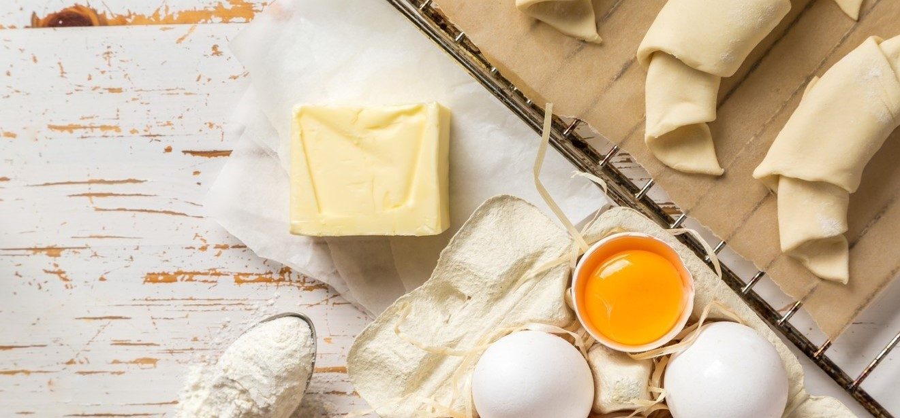

Development
During quarantine, I got interested in baking and spent most of my spare time trying new recipes. In creating this application, my goal is to build an interface to display a list of my favorite quarantine baking recipes, which would be easy and convenient for bakers to explore.
My app is valuable for bakers because it allows them to filter recipes based on dietary specification, type of pastry and flavor, to sort recipes based on prep time, cook time and number of servings, as well as to add and remove a particular recipe from the favorite section.
Before building the app, I brainstormed about the functionalities to be included in this recipe application. As a baker, I find dietary specification, type of pastry and flavor important because some of my family members have special dietary restrictions and only like pastries of certain type or flavor. Time management is also important since I usually multi-task while baking and therefore need to get a good estimation of the required time before getting started. My app aims to meet the user's need for planning by displaying the total prep time, total cook time and total time (prep plus cook) for the recipes added to the favorite section.
Final App: Your Quarantine Baking Recipes🍰
Click here to see my final deployed website: Quarantine Baking Recipes. Here is a small demo of my application.

Usability Considerations😊
I designed my app based on all three usability criteria: learnability, efficiency and memorability. My major considerations are as follows:
- Intuitive layout of navigation bar: all filtering categories and sorting features are presented in a self-explanatory and straightforward way on the very top of the page. Since there are 6 sorting features in total, a dropdown menu is used which will expand on click.
- Easy return to the original state: users can easily resort back to the original state (i.e., before filtering or sorting) without refreshing the page by clicking "All" for the filtering categories and choose "Select" for the sorting feature.
- Clear display of recipe information: each recipe is shown as a card with an image and a corresponding pastry icon to show the pastry type. In particular, I separate the qualitative and quantitative information of the recipe by using list items, and utilize font sizes, weights and colors to create hierachy between information.
- Guidance on using the favorite section: the favorite section displays the message that says "No favorite recipe added yet" by default to prompt the user to add recipes to favorite.
- Convenient favorite and unfavorite functionalities: once a recipe has been added to the favorite section, the original "Add to Favorite" button will become "Unfavorite", allowing the user to unfavorite that recipe easily. The same unfavorite function can also be performed in the favorite section with individual favorite recipe.
- Soothing and delightful feel of the website: rose gold is chosen to be the primary color scheme to create a visually pleasant and uplifting tone.
Conclusion
As a baker and a user interface designer, it was really fun and rewarding to build this application. In the future, I can extend it by adding the detailed step-by-step procedure and ingredients info for each pastry and potentially make the favorite section into a separate page (perhaps under user profile). Additional functionalities can also be added to the favorite section such as filtering and sharing to external social media.